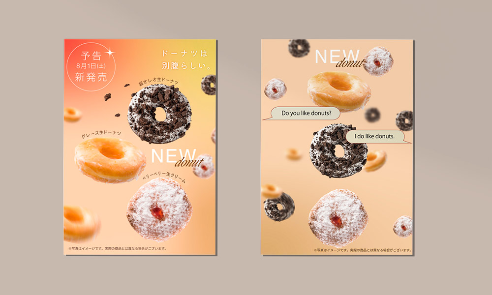
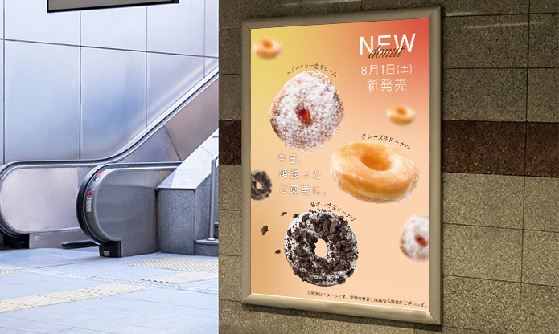
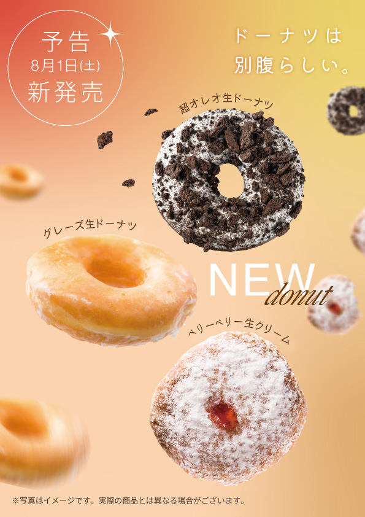
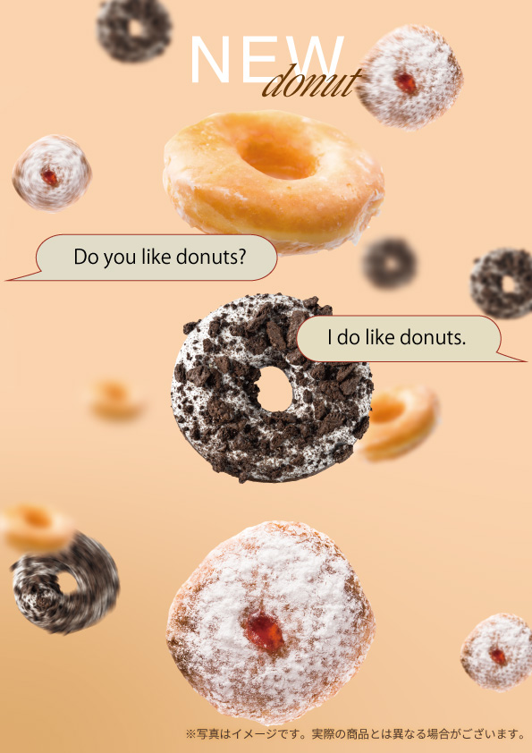
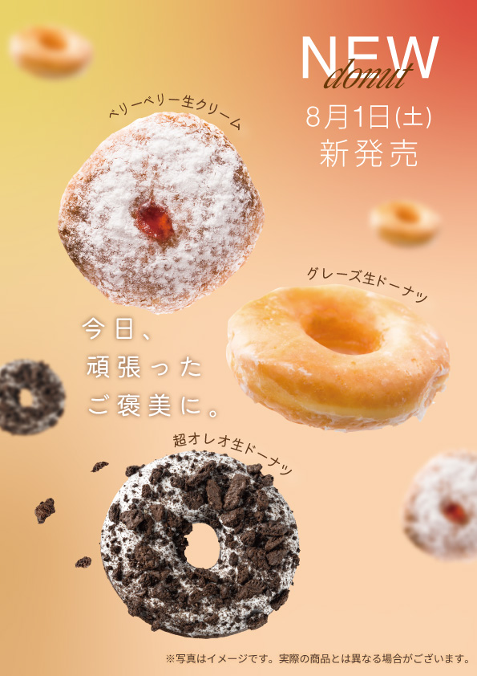

【制作期間】
企画:1日間、デザイン：5時間
【デザイン】Illustrator、Photoshop
ターゲット
都内の10〜30代の若者をターゲットとしています。近年SNSや専門店、コンビニなどで「生ドーナツ」を見かける機会が増え、その独特な食感や見た目のインパクトから注目を集めています。今回は、10~30代の世代をターゲットとしており、流行に敏感なことやSNSでの拡散が増えるように、見た目のポップさや生ドーナツの軽やかさなどの、視覚的な魅力が購買行動に繋がるように「グラデーション」「流行しているデザイン」「言葉」をキーワードに企画しました。
デザインの意図
「グラデーション」については、人の心にある「一言では表せない繊細な感情」をビジュアルで表現するためです。スイーツや新しいものを楽しむとき、人の内面には「ときめき」「明るさ」「心地よさ」といった複数のプラスの感情が混ざり合っています。こうした細やかな感情のグラデーションを描くことで、広告を見た方の心を自然と動かせるのではないかと考え、この表現を採用しました。
「流行しているデザイン」については、デザインのトレンドを取り入れるにあたり、SNSで若い世代に支持されているアカウントや、都内のデジタルサイネージなどを観察・分析しました。その結果、ぼかしを効果的に使って奥行きや立体感を出すデザインが多く取り入れられていることに着目し、今回の制作にも応用しています。
「言葉」については、デザインのグラデーションと同様に「共感」を生む表現を意識しました。「今日頑張った帰りだから、特別に自分を甘やかしてもいい」というご褒美の気持ちが自然と伝わるキャッチコピーに仕上げています。

(店舗最寄駅に設置するサイネージ)
PR・広告について
クライアントの課題である認知向上と売上向上を目指し、仕事や学校帰りの方に立ち寄ってもらえるよう、最寄駅に設置する広告として企画しました。キャッチコピーは「今日、頑張ったご褒美に」とし、ふと目にした時に疲れが和らぐような、共感してもらえる表現を意識しています。さらに、3枚並べた時に一体感が出るように仕上げることで、InstagramなどのSNSにも汎用しやすいデザインにしました。


